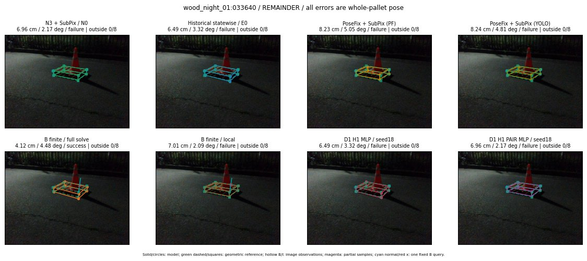

Whole-pallet pose errors; reference is a fixed geometric annotation, not certified physical GT.

Scores are uncalibrated logits. N0 retention is a numerical pose alias; it differs from H0 none or B fallback. B/I and profiles in baseline/B panels are original observations; L panels use new D1 observations. Only one deterministic supported B query is shown in a thumbnail; full support counts are below. Grey privacy rectangles edit the display copy only and are unrelated to O states; all observations were measured on original pixels. Thumbnails use JPEG quality85; detailed scientific panels are PNG.
| Method | Whole pose / cm, deg | Actual source | Selected ID | Score | Archived candidates | Eligible | N0 retained | H0 none | Fallback | Finite profiles |
|---|---|---|---|---|---|---|---|---|---|---|
| Raw YOLO + F | 7.90 cm / 2.00 deg / failure | OTHER | None | N/A | N/A | N/A | False | N/A | None | N/A |
| N3 + SubPix / N0 | 6.96 cm / 2.17 deg / failure | N0 | None | N/A | N/A | N/A | True | N/A | None | N/A |
| Historical statewise / E0 | 6.49 cm / 3.32 deg / failure | E0_REGENERATED | None | N/A | N/A | N/A | False | N/A | False | N/A |
| PoseFix raw | 7.52 cm / 3.30 deg / failure | OTHER | None | N/A | N/A | N/A | False | N/A | None | N/A |
| PoseFix + SubPix (PF) | 8.23 cm / 5.05 deg / failure | OTHER | None | N/A | N/A | N/A | False | N/A | False | historical support records 9; finite audit N/A |
| PoseFix + SubPix (YOLO) | 8.24 cm / 4.81 deg / failure | OTHER | None | N/A | N/A | N/A | False | N/A | False | historical support records 9; finite audit N/A |
| Historical L, seed18 | 6.96 cm / 2.17 deg / failure | N0 | N0 | N/A | 33 | 32 | True | True | True | N/A |
| Historical B fixed bank | 6.49 cm / 3.32 deg / failure | OTHER | LOGGED/G10/ORIGINAL_WD/outline_consider/5 | N/A | N/A | N/A | False | N/A | False | N/A |
| Historical B full | 24.40 cm / 78.28 deg / failure | OTHER | NEW/B/SWAPPED_WD/h0/LOGGED/G10/SWAPPED_WD/outline_consider/7/PROPOSED_NATIVE_YAW_0 | N/A | N/A | N/A | False | N/A | False | N/A |
| Historical edge full | 27.60 cm / 63.04 deg / failure | OTHER | NEW/edge/ORIGINAL_WD/h2/G10/SWAPPED_WD/sample/0/PROPOSED_NATIVE_YAW_2 | N/A | N/A | N/A | False | N/A | False | N/A |
| Historical AB full | 24.40 cm / 78.28 deg / failure | OTHER | NEW/AB/ORIGINAL_WD/h3/G10/ORIGINAL_WD/sample/1/PROPOSED_NATIVE_YAW_3 | N/A | N/A | N/A | False | N/A | False | N/A |
| B finite / fixed bank | 6.49 cm / 3.32 deg / failure | OTHER | LOGGED/G10/ORIGINAL_WD/outline_consider/5 | N/A | N/A | N/A | False | N/A | False | 13/13 |
| B finite / full solve | 4.12 cm / 4.48 deg / success | OTHER | NEW_FINITE/B/ORIGINAL_WD/h0/LOGGED/G10/ORIGINAL_WD/outline_consider/5/PROPOSED_NATIVE_YAW_0 | N/A | N/A | N/A | False | N/A | False | 13/13 |
| B finite / local | 7.01 cm / 2.09 deg / failure | OTHER | NEW_FINITE/B/ORIGINAL_WD/h0/N0_LOCAL_SAME_PHYSICAL_POSE/ORIGINAL_WD | N/A | N/A | N/A | False | N/A | False | 13/13 |
| Edge finite / full solve | 36.00 cm / 85.42 deg / failure | OTHER | NEW_FINITE/edge/SWAPPED_WD/h0/LOGGED/G10/SWAPPED_WD/outline_consider/7/PROPOSED_NATIVE_YAW_0 | N/A | N/A | N/A | False | N/A | False | 13/13 |
| D0 H0 MLP / seed18 | 6.96 cm / 2.17 deg / failure | N0 | N0 | 0.6542073488235474 | 10 | 9 | True | True | True | N/A |
| D0 H0 MLP / seed19 | 6.96 cm / 2.17 deg / failure | N0 | N0 | 1.4434068202972412 | 10 | 9 | True | True | True | N/A |
| D0 H0 MLP / seed20 | 6.96 cm / 2.17 deg / failure | N0 | N0 | -0.7282342314720154 | 10 | 9 | True | True | True | N/A |
| D0 H1 MLP / seed18 | 6.49 cm / 3.32 deg / failure | OTHER | G10/ORIGINAL_WD/endpoint/5 | -3.6118528842926025 | 10 | 9 | False | False | False | N/A |
| D0 H1 MLP / seed19 | 6.49 cm / 3.32 deg / failure | OTHER | G10/ORIGINAL_WD/endpoint/5 | -3.851761817932129 | 10 | 9 | False | False | False | N/A |
| D0 H1 MLP / seed20 | 11.81 cm / 7.98 deg / failure | OTHER | WD0/ORIGINAL_WD/selected | -3.9491748809814453 | 10 | 9 | False | False | False | N/A |
| D1 H0 MLP / seed18 | 6.96 cm / 2.17 deg / failure | N0 | N0 | 4.590512275695801 | 10 | 9 | True | True | True | N/A |
| D1 H0 MLP / seed19 | 6.96 cm / 2.17 deg / failure | N0 | N0 | 4.451670169830322 | 10 | 9 | True | True | True | N/A |
| D1 H0 MLP / seed20 | 6.96 cm / 2.17 deg / failure | N0 | N0 | 4.170506954193115 | 10 | 9 | True | True | True | N/A |
| D1 H1 MLP / seed18 | 6.49 cm / 3.32 deg / failure | OTHER | G10/ORIGINAL_WD/endpoint/5 | -1.4510869979858398 | 10 | 9 | False | False | False | N/A |
| D1 H1 MLP / seed19 | 6.49 cm / 3.32 deg / failure | OTHER | G10/ORIGINAL_WD/endpoint/5 | -1.6705946922302246 | 10 | 9 | False | False | False | N/A |
| D1 H1 MLP / seed20 | 6.49 cm / 3.32 deg / failure | OTHER | G10/ORIGINAL_WD/endpoint/5 | -1.6800254583358765 | 10 | 9 | False | False | False | N/A |
| D1 H1 ROLE AFFINE / seed18 | 6.96 cm / 2.17 deg / failure | N0 | N0 | -0.18308550119400024 | 10 | 9 | True | False | False | N/A |
| D1 H1 ROLE AFFINE / seed19 | 6.96 cm / 2.17 deg / failure | N0 | N0 | 0.04145687445998192 | 10 | 9 | True | False | False | N/A |
| D1 H1 ROLE AFFINE / seed20 | 6.96 cm / 2.17 deg / failure | N0 | N0 | -0.21059320867061615 | 10 | 9 | True | False | False | N/A |
| D1 H1 PAIR MLP / seed18 | 6.96 cm / 2.17 deg / failure | N0 | N0 | -0.9912563562393188 | 10 | 2 | True | False | False | N/A |
| D1 H1 PAIR MLP / seed19 | 6.96 cm / 2.17 deg / failure | N0 | N0 | -1.3012478351593018 | 10 | 2 | True | False | False | N/A |
| D1 H1 PAIR MLP / seed20 | 6.96 cm / 2.17 deg / failure | N0 | N0 | -1.3520838022232056 | 10 | 2 | True | False | False | N/A |
| D1 H1 PAIR ROLE AFFINE / seed18 | 6.96 cm / 2.17 deg / failure | N0 | N0 | -0.34354451298713684 | 10 | 2 | True | False | False | N/A |
| D1 H1 PAIR ROLE AFFINE / seed19 | 6.96 cm / 2.17 deg / failure | N0 | N0 | -0.524734616279602 | 10 | 2 | True | False | False | N/A |
| D1 H1 PAIR ROLE AFFINE / seed20 | 6.96 cm / 2.17 deg / failure | N0 | N0 | -0.30611762404441833 | 10 | 2 | True | False | False | N/A |
| Regenerated common E0 | 6.49 cm / 3.32 deg / failure | E0_REGENERATED | E0_REGENERATED | N/A | N/A | N/A | False | N/A | False | N/A |